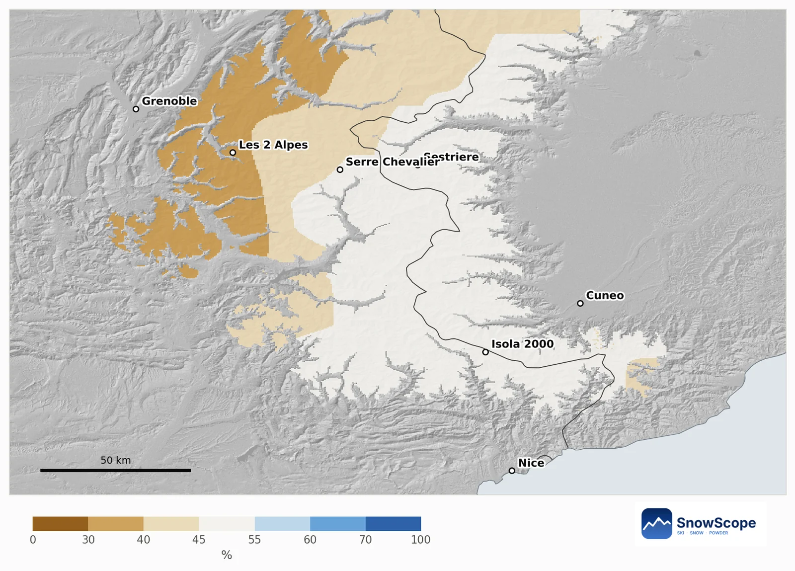

Sella Ronda من Val Gardena، مرحلة بمرحلة: ربعة ديال الكولات والتلج فكل علو
Sella Ronda دورة بالسكي حول الجبل ديال Sella فالدولوميت، كتربط ربعة ديال الوديان اللادينية بربعة ديال الكولات. تقدر ديرها مع اتجاه العقارب ولا عكسو، وتقدر تاخد حتى ستة ديال السوايع، داكشي علاش النصيحة هي تخرج قبل 10 ديال الصباح. Val Gardena، بالقرى ديالها Sëlva و Santa Cristina و Urtijëi، من أحسن البلايص باش تبدا. هادي الدورة مرحلة بمرحلة، من Sëlva مع اتجاه العقارب، مع نظرة على التلج فكل علو.
شوف توقعات التلج مباشرة ديال Val Gardena فالتطبيق ديال SnowScopeالعلو ديال التلج، التنبيهات والخريطة 3D، فابور.
قبل أول تيليسييج: علاش العلو هو اللي كيحسم هاد الدورة
ف Val Gardena التلج الطبيعي كيتبدل بزاف مع العلو، والسلسلة ديالنا كتبين هادشي مزيان. فالموديل ديالنا ديال 46 شتوة اللي فاتت، أقل نقطة فالدومين، على 1258 م، القمة العادية ديالها غير تقريبا 25 سم. على 1882 م تقريبا 63 سم، وعلى 2507 م، الفوق ديال السلسلة ديالنا، تقريبا 165 سم. الربعة ديال الكولات ديال Sella Ronda كاملين بين هاد الجوج ديال العلوات اللخرين: داكشي علاش الدورة نهار ديال الجبل العالي واخا ماكتوصلش لحتى قمة.
المرحلة 1: من Sëlva للكول ديال Gardena
من Sëlva، الطلعة اللولة كتوصلك للكول ديال Gardena، على 2136 م، اللي كيربط Val Gardena مع Corvara ف Val Badia. بداية ساهلة ومريحة: مازال نتا فوق الوسط ديال العلوات ديالنا، فين الشتا العادية فيها التلج اللي خاصك من يناير.
المرحلة 2: Corvara والكول ديال Campolongo
كتهبط ل Val Badia، ومن بعد كتطلع عاوتاني من الكول ديال Campolongo، على 1875 م، بين Corvara و Arabba. هادا أقل كول فالربعة، تقريبا نفس العلو ديال النقطة ديالنا فالوسط. تما الشتا العادية فيها تقريبا 25 سم ديال التلج فدجنبر، 39 سم فيناير، 48 سم ففبراير و 47 سم فمارس، وغير 2 سيمانات فالموسم فيهم 50 سم فنص الشتوات. يعني هادي المرحلة اللي كتضرر كثر فالعام اللي فيه التلج الطبيعي قليل: تزلجها بالحذر وتسنى تلج قاسح ولا مستعمل فآخر النهار.
المرحلة 3: من Arabba للكول ديال Pordoi
من Arabba الطريق كتطلع للكول ديال Pordoi، على 2239 م، أعلى واحد فالربعة، ومن بعد كتهبط ل Canazei فالوادي ديال Fassa. الفوق التلج كريم بزاف كثر: على 2507 م الشتا العادية فيها تقريبا 78 سم فيناير، 92 سم ففبراير و 107 سم فمارس وأبريل. المتزلجين القويين غالبا كيلقاو هنا أحسن تلج فالنهار.
المرحلة 4: الكول ديال Sella والرجوع
آخر طلعة كتدوز من الكول ديال Sella، على 2218 م، اللي كيربط الوادي ديال Fassa مع Val Gardena. الهبطة اللخرة نحو Sëlva هي اللحظة فين الرجلين العيانين كيتلاقاو مع تلج تحت: خلي الوقت، وإلا كانو البيستات اللي لتحت رقاق، خود تيليسييج بلا ما تزيد. اللي كيدورها عكس العقارب كيلقى نفس الكولات بالمقلوب: Sella، Pordoi، Campolongo، ومن بعد Gardena.
فوقاش الدورة كتخدم مزيان
الأرقام ديالنا كتشير لفبراير ومارس، ملي حتى العلو المتوسط فيه أكثر تلج والفوق قريب من القمة ديالو. التلج الطبيعي ماشي كلشي، ولكن كيعطي فكرة صادقة على الهامش. الاتجاه مخلط: على 1882 م القمة الوسطى نقصات من تقريبا 79 سم فأول خمسطاش ديال الشتوات ديالنا ل تقريبا 58 سم فآخر خمسطاش، وعلى 2507 م طلعات من تقريبا 165 ل 181 سم. الشتا اللي فاتت، 2025-26، كانت ضعيفة: تقريبا 42 سم فالعلو المتوسط و 95 سم فالفوق.
وادي عندو التاريخ ديالو
Val Gardena واحد من خمسة ديال الوديان اللي أغلب الناس فيهم كيهضرو باللادينية، ومشهورة بالنقش على الخشب. المتسابقين كيعرفوها بالهبطة ديال Saslong، اللي كتدار تقريبا كل عام من 1969، والوادي استقبل البطولة ديال العالم ديال التزلج الألبي ف 1970. قبل الدورة، شوف التيليسييجات المحلولين فالموقع الرسمي، وقرا النشرة الجهوية ديال الانهيارات إلا غادي تخرج من البيستات.
نصايح للي كيتزلجو
- خرج قبل 10 ديال الصباح؛ الدورة تقدر تاخد حتى ستة ديال السوايع.
- رد البال للمرحلة ديال Campolongo: هو أقل كول فالربعة.
- فالعام اللي فيه التلج قليل، خود تيليسييج فالأخير بلا البيستات اللي لتحت المستعملين.
- التلج فالخريطة ديالنا ماكيعنيش بلي المحطة محلولة: شوف التيليسييجات فالموقع الرسمي.
المراجع والمصادر
- Wikipedia, 'Val Gardena', retrieved 8 November 2026: municipalities, Ladin, Saslong, 1970 World Championships, Sella Ronda. en.wikipedia.org/wiki/Val_Gardena
- Wikipedia, 'Sellaronda', retrieved 8 November 2026: four passes and valleys, both directions, time needed. en.wikipedia.org/wiki/Sellaronda
- Wikipedia, 'Gardena Pass', retrieved 8 November 2026. en.wikipedia.org/wiki/Gardena_Pass
- Wikipedia, 'Campolongo Pass', retrieved 8 November 2026. en.wikipedia.org/wiki/Campolongo_Pass
- Wikipedia, 'Pordoi Pass', retrieved 8 November 2026. en.wikipedia.org/wiki/Pordoi_Pass
- Wikipedia, 'Sella Pass', retrieved 8 November 2026. en.wikipedia.org/wiki/Sella_Pass
على هاد الأرقام
الأرقام ديال التلج: التاريخ ديال التلج ديال SnowScope، 46 شتوة اللي فاتت (1980-81 حتى ل 2025-26) فتلاتة ديال العلوات فالمحطة، موديل ديال اللي فات مصحح بالعلو (تقدير لمنطقة، ماشي البلاغات ديال المحطة). التيليسييجات، البيستات والطريق: المصادر اللي لتحت، متشافة فالتاريخ المكتوب.
النشرات الرسمية ديال الانهيارات: AINEVA
كيفاش تستاشهد بهاد المقال
للبحث، التعليم ولا الصحافة: الأرقام والرسومات تقدر تعاود تخدم بيهم بحرية تحت CC BY 4.0 مع هاد الاستشهاد.
SnowScope (2026), Sella Ronda من Val Gardena، مرحلة بمرحلة: ربعة ديال الكولات والتلج فكل علو, https://snowscope.app/blog/ar/2026/11/val-gardena-sella-ronda-leg-by-leg-snow-by-height.html, تشاف ف 2026-11-09
SnowScope (Atlas Labs). (2026, November 9). Sella Ronda من Val Gardena، مرحلة بمرحلة: ربعة ديال الكولات والتلج فكل علو. SnowScope snow reports. https://snowscope.app/blog/ar/2026/11/val-gardena-sella-ronda-leg-by-leg-snow-by-height.html
BibTeX
@misc{snowscope2026valgardenasellarondalegb,
author = {{SnowScope (Atlas Labs)}},
title = {Sella Ronda من Val Gardena، مرحلة بمرحلة: ربعة ديال الكولات والتلج فكل علو},
year = {2026},
month = nov,
howpublished = {\url{https://snowscope.app/blog/ar/2026/11/val-gardena-sella-ronda-leg-by-leg-snow-by-height.html}},
note = {Published 2026-11-09 21:22 UTC; accessed 2026-11-09}
}· CC BY 4.0 · الطريقة، الداتا والأدوات →
Val Gardena: التلج والحرارة حسب العلو، هاد الشتا مقارنة مع اللي فاتت (الأدوات) →
تابع Val Gardena
فابور: ميساج ملي يجي التلج، والتوقعات كل صباح.
تقارير أخرى ديال التلج

فين دجنبر 2026 غيكون فيه التلج كثر ولا قل من Écrins حتى للألب البحرية و Piemonte: التوقع الموسمي الأوروبي والخريطة ديالنا، جبل بجبل.

التلج ديال اليوم فليفينيو، التوقع الموسمي الأوروبي لدجنبر، وعلاش العلو ديال ليفينيو كيخلي 25 دجنبر أبيض حتى فدجنبر سخون.

برنامج رخيص ديال 3 أيام فبحيرة كومو فدجنبر بالأثمنة الحقيقية ديال 2026-27: الترينو، البابور، الفونيكولير والتزلج ف Piani di Bobbio ولا Madesimo، شحال كتوفر مقارنة مع كورتينا، والحظ ديال التلج فالعيد.